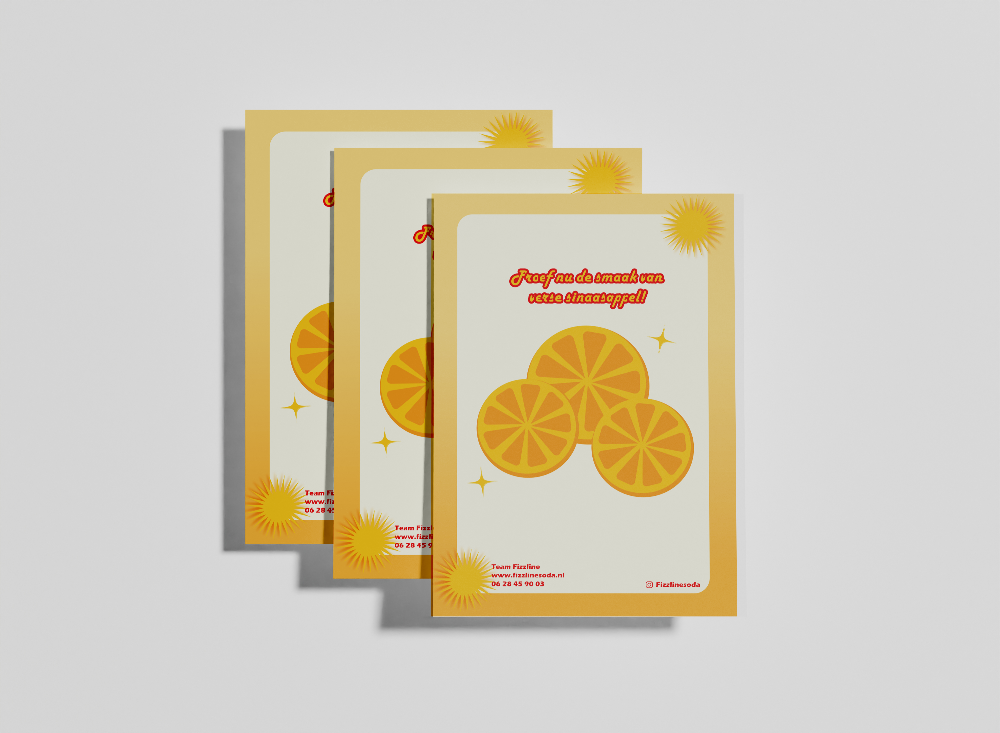
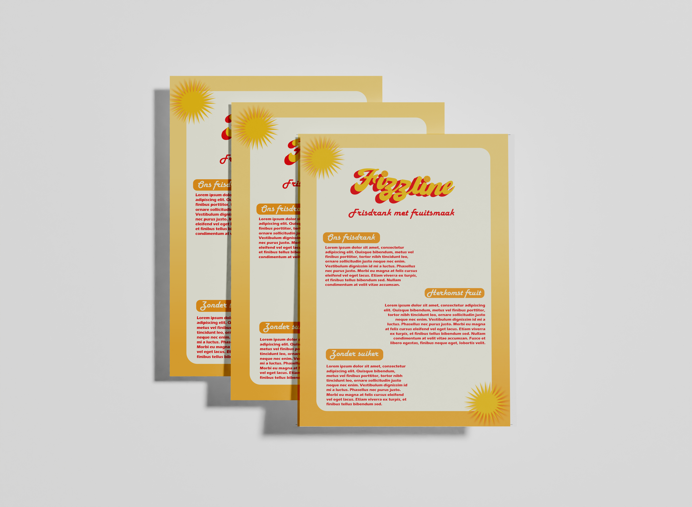

Schoolproject
Frisdrank blikje
Branding voor een blikje frisdrank met als waarde 'organisch'.



Vak
Media Design
Opdrachtgever
School
Samenwerking
Individueel
Over het project
Dit project richtte zich op het ontwerpen van een identiteit voor een frisdrankblikje.
De ontwerpen hebben een overzichtelijke layout en een goed contrast tussen kleuren om alles leesbaar te maken. Het heeft een rustige en natuurlijke sfeer waardoor het voor de consument organisch en transparant oogt. De kleuren, lettertypes, illustraties en vormen komen op verschillende manieren terug in de ontwerpen.